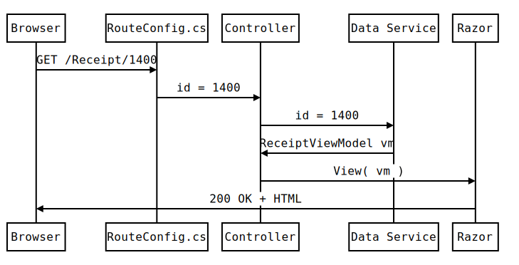
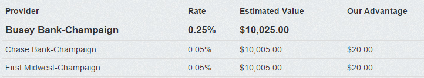
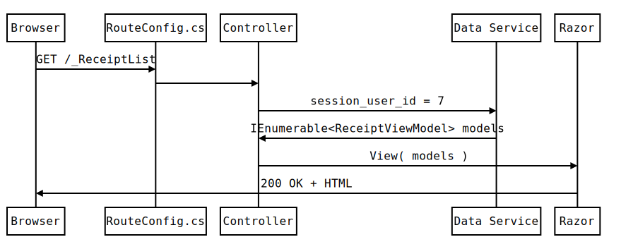
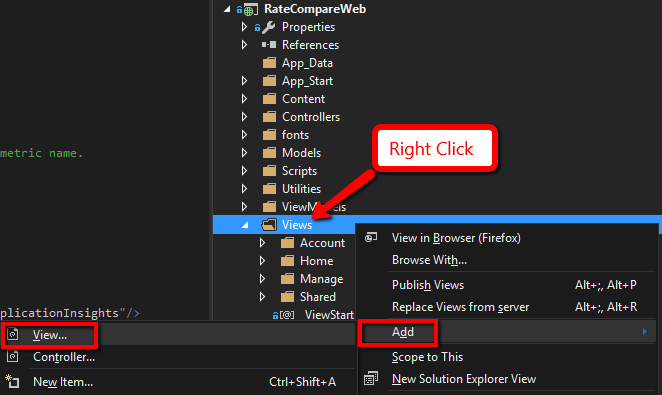
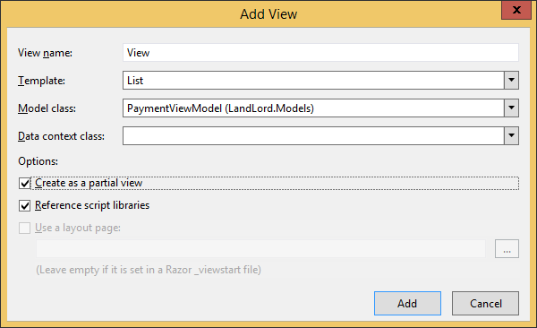

# Securing cPanel .small[ Presented by [Edward Delaporte](mailto:edward.delaporte@busey.com) for [Busey Bank](https://www.busey.com) at [University of Illinois IT Professionals Forum](https://www.itproforum.illinois.edu/) on June 14, 2018. ] This slide deck is online at http://edward.delaporte.us ??? Get out your lasert pointer. Test it. Edward - Writing Web Application Solutions since 2000. - Hosting cloud microsites since 2007. - My Career: ASP, ASP.Net (1), PHP, Perl CGI, Python WSGI, React.js, ASP.Net MVC (4.5). --- # Why this presentation, why today? ### Microsoft Recently open sourced [much](https://github.com/aspnet) of ASP.Net ### React.Js was the [newest framework ever](http://www.isaacchansky.me/days-since-last-new-js-framework/), when it released. ### Unobtrusive Validation is amazing. ??? Notes from <Chuck:> Sounds great! Ok, right to it, pain point: The largest number of compromised host events for a single host is on an official campus cPanel instance. This is a very bad title to hold. The biggest issue we had with that was in policy and management. I'm pretty sure they let customers (students and staff) access parts of the admin panel I would govern more, mainly the ability to bring in 3rd party apps, add-ons, and plugins. They also fell behind on patches/updates. I do not know if they still allow people full access to spin up instances on their own, but that was a huge issue since the admin had no specific knowledge or expectations on individual configurations. Now having said that, cPanel moved over to the enterprise side, and since then Security has received "assurances". We actually haven't seen many issues since, so we're hopeful that it's well managed now. (knock on wood) I guess the last gap is in visibility- whether we keep controls loose and let folks do a lot (too much?) or not, I think it's important to be acutely aware of the state of things and keep on top of any irregularities. Indeed the most severe incident in the pile threatened to take the entire cPanel instance offline in the middle of the semester, which generated much ado. Happy to hear that you're talking on this. cPanel is neat, and when it's done right it can help Security by placing a whole host of disparate host instances under common management and policy, in a single managed bucket. But there has to be agreement on everything from purpose to features to limits (and that's really where I think it gets fuzzy). </Chuck:> <img class='stretch little' src='static/img/gallery/abstract_ipad/11 8-56-49 PM.jpg'/>      - Layout = null tells Razor not to add Busey Logo header and copyright footer so we can include it in another page. - @ sign invokes CSharp code. - We did our data fetching and number crunching in the controller. --- <img class='stretch left little' src='static/img/gallery/abstract_ipad/11 8-29-50 PM.jpg'/> <img class='stretch little' src='static/img/gallery/abstract_ipad/11 8-46-35 PM.jpg'/> <img class='left stretch little' src='static/img/gallery/abstract_ipad/11 8-29-50 PM.jpg'/> <img class='stretch little' src='static/img/gallery/abstract_ipad/11 8-46-35 PM.jpg'/> --- # Questions? - edward.delaporte@busey.com ??? - You can find this slide deck at Edward.Delaporte.us